京都大学体育会少林寺拳法部
写真
大会（2015年度）
全国大会
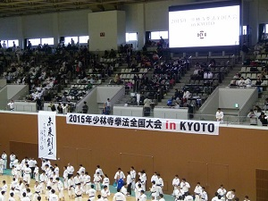全国大会です。今年はなんとin Kyoto。京都代表の一角として、手束牧本が出場します。地元開催だけに、熱が入ります。
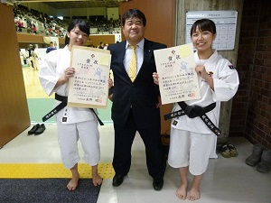ななななななななんと！！！手束牧本が全国４位です！！！我が部の歴史に残る快挙です！おめでとう！！
全日本学生大会
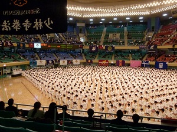日本武道館にて、全日です。毎回こんな写真しかなくてすみません。
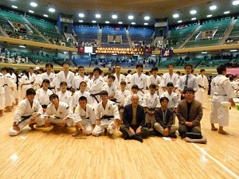今年は特に目立った成績を残すことはできませんでした。しかし、今後の課題をそれぞれが見つけることができた大会になったと思います。やっぱり関東はすごいですね。
関西新人大会
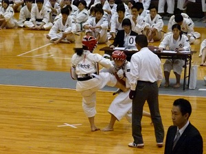関西の大会では運用法もあります。写真は女子。
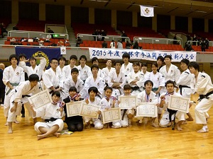集合写真！上位入賞もいくつか出てうれしいです！
京都府学生大会
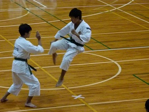今年は一回生に飛連蹴をさせてみました。いいですねえ。
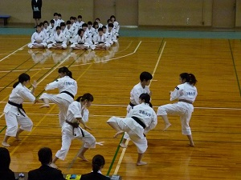今年も女子団演を出せました！来年以降も出せるといいですねえ。
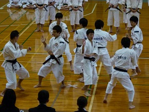もちろん男子もやってます。
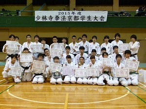今年はたくさんの入賞者を出すことができました！来年はもっとたくさん出したいですね！
山城ブロック交流大会
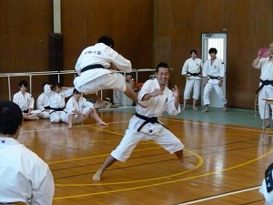監督の道院の所属である宇治の大会にお邪魔しています。小規模ではありますが龍谷、京女や翔英高校など強豪大学・高校も出場していて、なかなかのイベントです。ちなみに有段の部ではやっぱり手束牧本が優勝。写真は演武中に偶然カメラ目線になった主将。